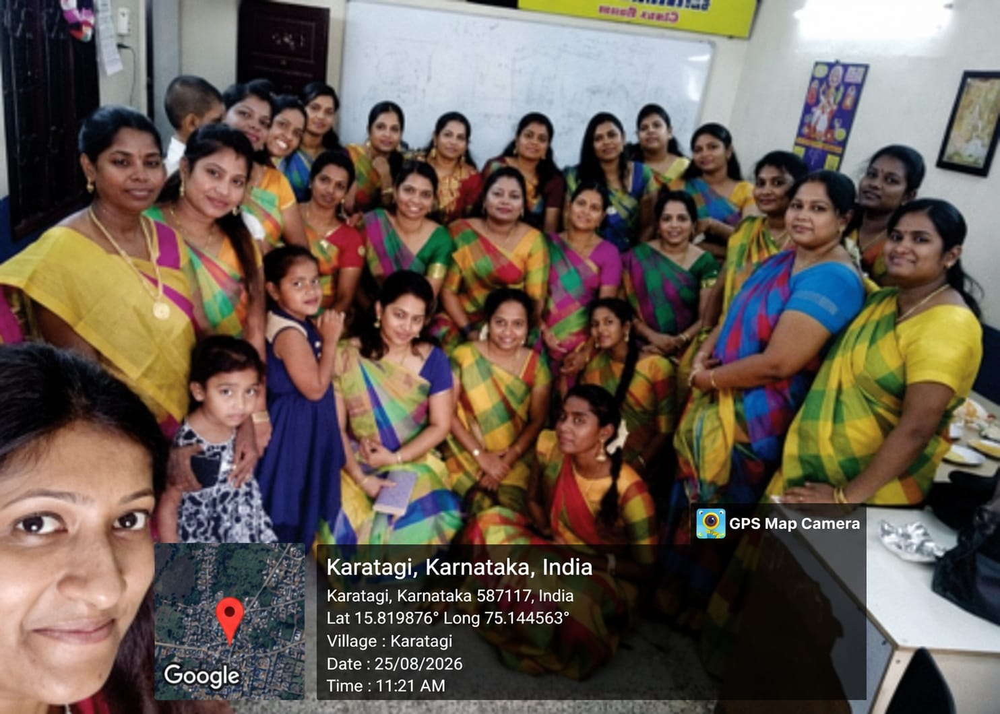
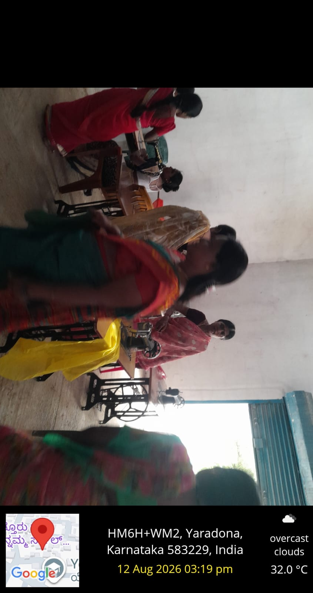
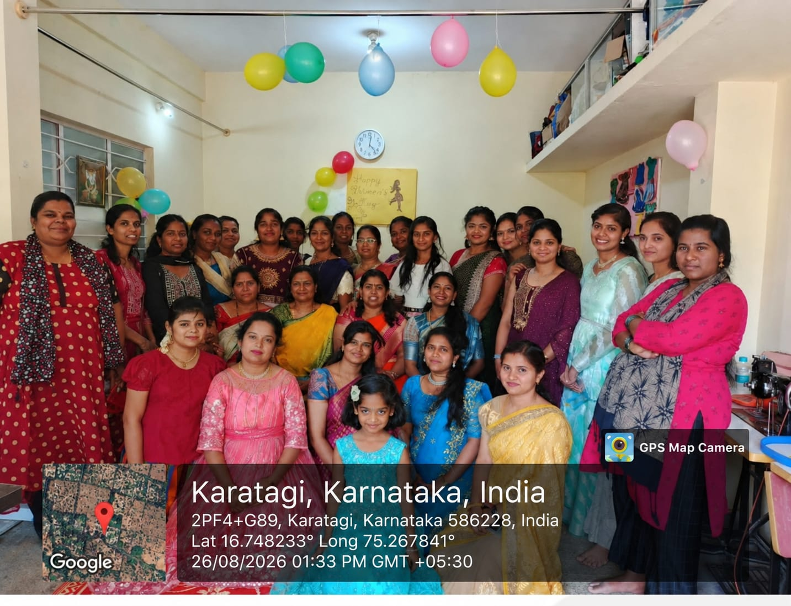
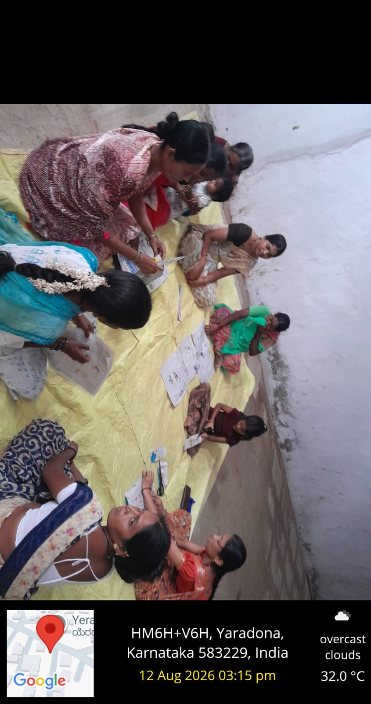
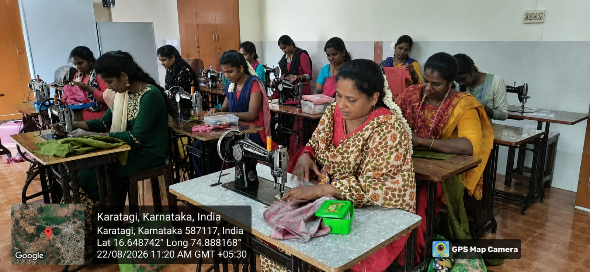
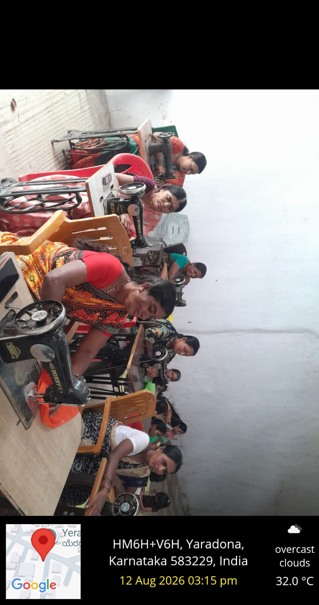

"Skills for Today, Opportunities for Tomorrow."
A practical vocational training initiative helping rural communities build confidence, employable skills, and pathways to sustainable livelihoods.






The Karnataka Skill Development Corporation programme connects rural communities with practical training designed around local opportunity and participant interest.
PCDF Trust supports community mobilisation, training coordination, field-level engagement, and documentation so that participants can turn new skills into greater independence and livelihood options.
The programme combines hands-on learning with community participation and practical support.
Hands-on sessions introduce participants to sewing practice, garment work, and the confidence to pursue income-generating activity.
Structured classroom sessions build the knowledge, safety awareness, and basic concepts that support practical training.
Local engagement helps participants learn together, share experience, and stay connected to support beyond the classroom.
Photographs from KSDC-supported training activities at Karatagi and Yaradona.
Contact PCDF Trust for programme enquiries, participant coordination, or collaboration opportunities.
We welcome enquiries from communities, training partners, researchers, and organisations working to expand access to meaningful skills and livelihoods.